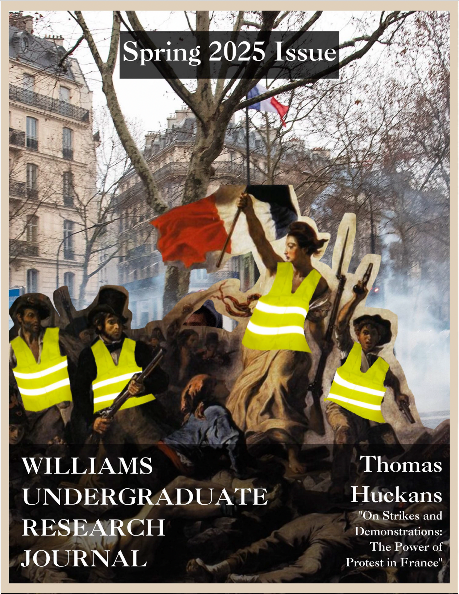
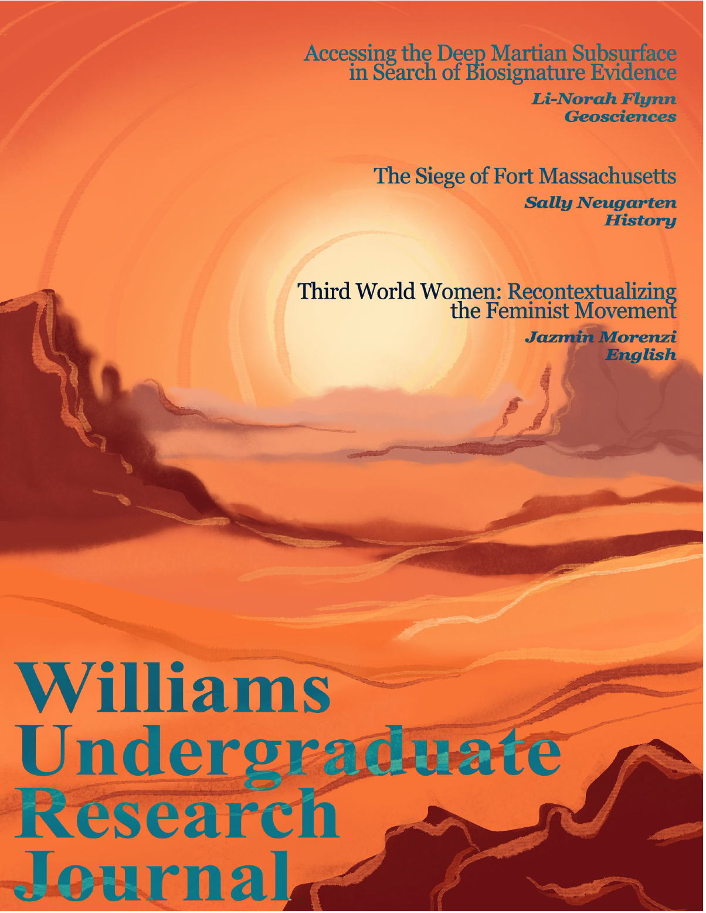
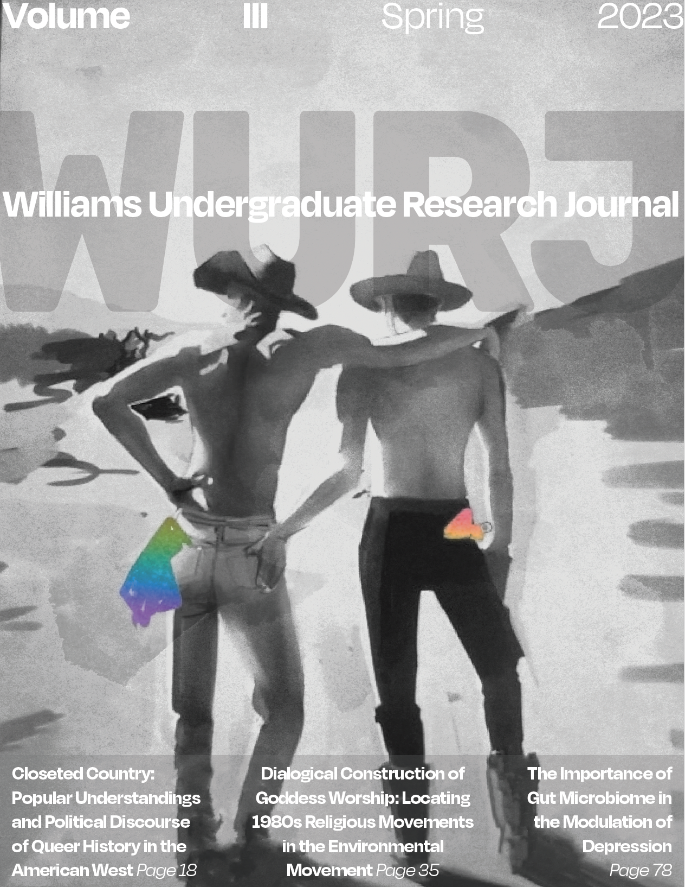
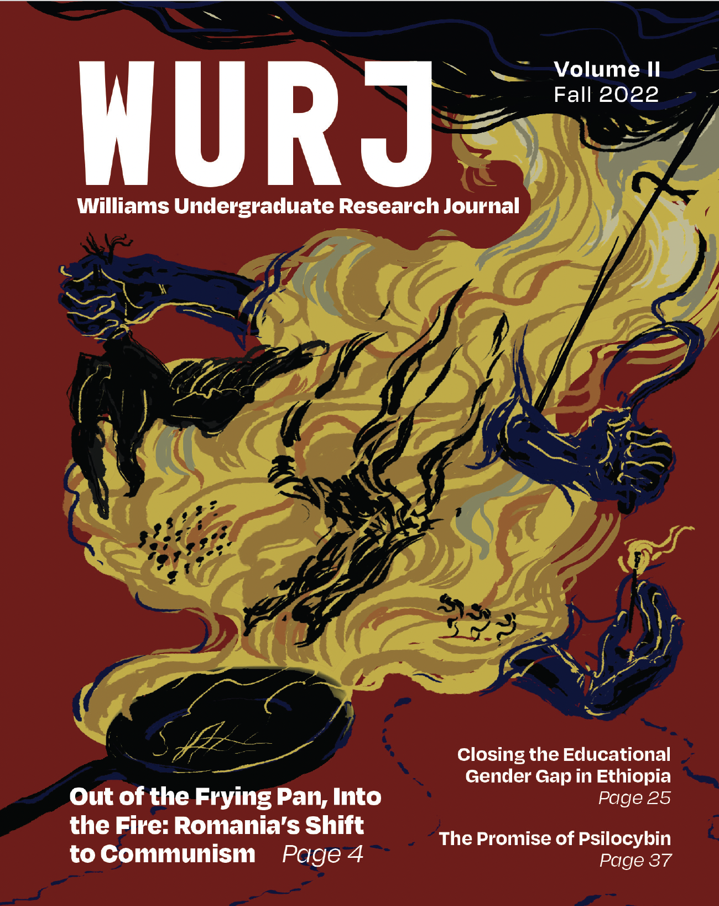
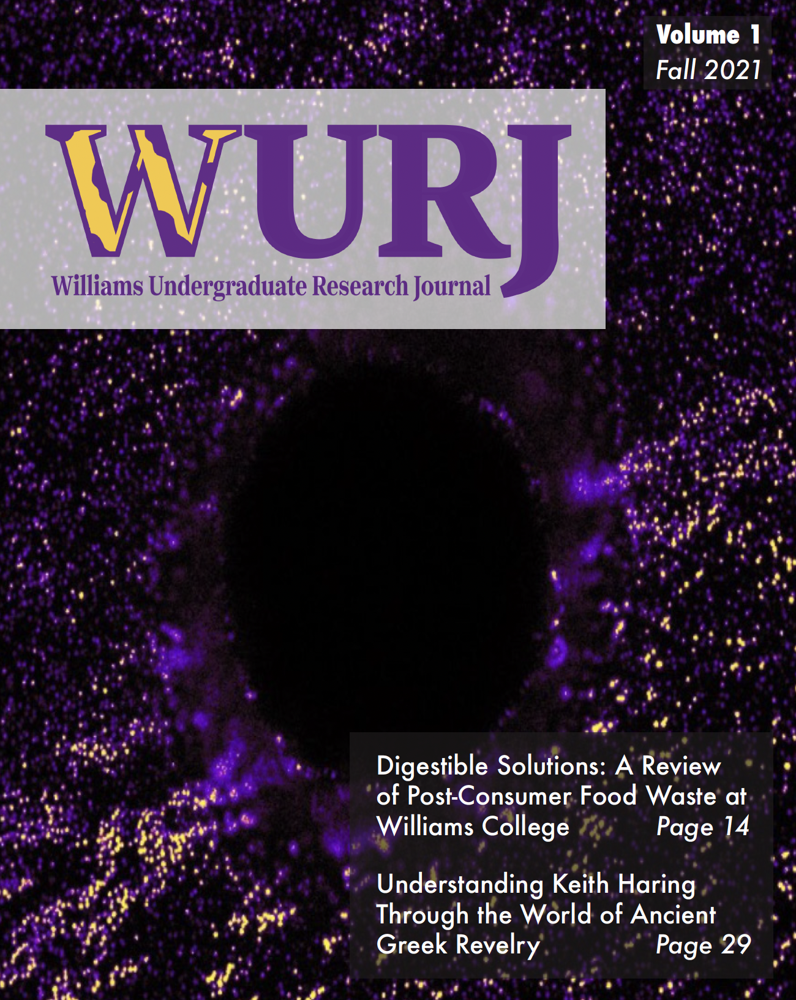

Small Molecule Stabilization of the CARD11 G-quadruplex Represses Transcription
Aarohi Sonputri
This study investigates CARD11 gene silencing as a potential therapeutic for DLBCL by targeting G-quadruplex structures to repress transcription.
CRISPR-Cas9: A Testament to the Value of Basic Research
Ray Wang
A historical review tracing the development of gene-editing techniques and emphasizing the necessity of basic scientific research.
From Burma to Bangladesh: Continuous Challenges and Refugee-Empowering Resolutions
Emerald Dar
An analysis of the educational challenges faced by Rohingya children in Kutupalong Refugee Camp and highlights refugee-led campaigns.
Superfund at 44: A Policy Puzzle of Environmental Persistence
Jessica Kim
A study on the legislative history and expansion of the CERCLA (Superfund) Act, focusing on interest group dynamics.
“Flattery Instead of Representation:” Sterling A. Brown’s Frustrations with Black Drama
Jazmin Morenzi
Explores Sterling A. Brown’s critical perspectives on Black drama and the industry's failure to move beyond stereotypes.
On Strikes and Demonstrations: The Power of Protest in France
Thomas Huckans
An exploration of French protest culture and citizen perspectives on dissent, government, and civil disobedience.
“I Contain Multitudes”: The Modern Making of Beat Poet Allen Ginsberg
Austina Xu
Investigates how modernist Imagism and New Criticism influenced the development of Beat poet Allen Ginsberg.

Investigating the Kinetics and Regioselectivity of a 1,3-dipolar Cycloaddition
Alex Cumming
Investigates substituent effects on the rate of 1,3-dipolar additions using NMR spectroscopy and computational orbital analysis.
Exploring Health Behaviors on Campus: Resting and Eating Habits
Ashley Kim
Examines the correlation between sleep habits, dietary choices, and self-satisfaction among college students.
Sustainable Retirement Investments: Shifting Paradigms at Williams College
Diliara Sadykova
Provides a strategic plan for integrating ESG retirement funds at Williams College to align investments with sustainability goals.
Analyzing the Factors Affecting the Incidence of Foreign Direct Investment (FDI)
Dylan Safai, Nelson Del Tufo, Dylan Mealey
An empirical analysis identifying indicators and factors, such as GDP and historical political context, that affect global FDI inflows.
National Hypocrisy: Implications of Wartime Values at Home During the Asia-Pacific War
Elizabeth Cheng
Explores how the rhetoric of wartime values exposed and exacerbated socio-economic and racial inequalities in both the U.S. and Japan.
Third World Women: Recontextualizing the Feminist Movement
Jazmin Morenzi
Explores how the 1972 anthology "Third World Women" reclaimed the term to build solidarity among women of color in the feminist movement.
Identifying the Most Practical Method for Accessing the Deep Martian Subsurface
Li-Norah Flynn
Evaluates various methods for accessing deep Martian subsurface to search for biosignatures, focusing on feasibility and planet-protection.
The Siege of Fort Massachusetts
Sally Neugarten
A historical discussion of the circumstances surrounding the 1746 siege of Fort Massachusetts and the complex relations with indigenous tribes.

Closeted Country: Popular Understandings and Political Discourse of Queer History in the American West
Cole Mason
An analysis of the popular and political reception of queer Western history, focusing on 'Out West,' gay rodeo, and the Charley Parkhurst story.
How Can Children Learn Math Better?
Daniela Galvez-Cepeda
Explores the impact of math anxiety, parental stereotypes, and educational environments on children's mathematical learning and self-efficacy.
Dialogical Construction of Goddess Worship: Locating 1980s Religious Movements in the Environmental Movement
Lauren Lynch
Analyzes the language of 1980s environmentalists to understand how the construction of 'Goddess worship' shaped boundaries within the environmental movement.
Double-Faced Wagers: Exchange Coffeehouses in Post-Revolution England
Wes Morrison
Examines the role of London coffeehouses in the Financial Revolution and challenges the Habermasian notion of the coffeehouse as a purely democratic space.
Green Gold and Silver Cities: Gregory Mason, 20th Century Maya Archaeology, and United States Imperialism in Central America
Peyton Beeli
Explores how Maya archaeology was utilized to justify and entrench United States economic and intellectual imperialism in the Yucatan Peninsula.
Investigation of Mechanisms Mediating Microbial Survival, Abundance, and Pathogenicity Within Gut Microbiota
AbuBakr Sangare
A study proposal investigating population dynamics and microbial mimicry as mechanisms for bacterial survival and their potential link to Multiple Sclerosis.
Nuclear Estrogen Receptor ERα may not be Involved in Estradiol (E2) Induced Heart Valve Malformations
Hannah Stillman
Investigates whether estrogen-induced heart valve abnormalities in zebrafish are mediated through the ERα receptor, finding evidence that alternative pathways may be involved.
The Importance of Gut Microbiome in the Modulation of Depression
Cynthia Masese
Presents evidence from association and causal studies establishing the gut microbiome as a necessary component in the modulation of depression.
My People: The Visual Origins and Viral Spectacle of Black Suffering in Digital Culture
Kimberlean Donis
Explores the intersection of Black visual culture and digital landscapes, examining how contemporary technologies replicate the visual tradition of Black suffering.

Out of the Frying Pan, Into the Fire: An Evaluation of the Role of Human Agency in Romania’s Shift From Fascism to Communism in the Mid 20th Century
Utsav Bahl
Challenges revisionist arguments on Romanian historiography, arguing that King Michael I and British Clandestine actions shaped the nation's fate.
Closing the Educational Gender Gap in Ethiopia: Perspectives from Behavioral Economics
Surya Kotapati
Proposes a two-pronged behavioral intervention to mitigate the attrition of female students in Ethiopia using status quo bias and loss aversion.
Always Leave Them Wanting More: Business in the Age of Scrolling, Reacting, and Posting
Caroline Case
Analyzes how social media platforms exploit human patterns of attention and dopamine reward systems for advertising revenue.
Islamist Education: American-Funded Textbooks In Afghanistan
Niko Malhotra
Examines how American-funded textbooks used during the Soviet-Afghan war promoted radical Islamist ideology and militant rhetoric.
The Promise of Psilocybin: Psilocybin as a Treatment Modality for Depression
Mukund Nair
Reviews current treatments for depression and explores the potential of psilocybin-assisted psychotherapy as a novel therapeutic modality.
The Effect of School Funding Inequality on Student Achievement Using Causal Inference Methods
Elijah Tamarchenko
Utilizes causal inference methods to argue that below-average school funding is a direct cause of lower student proficiency as measured by the MCAS.
Human Exposure to Bisphenol A From Landfill Leachate-Contaminated Water
Gwyneth Chilcoat
Examines the pathway from landfill to drinking water contamination by bisphenol A (BPA) and analyzes the potential human health effects.

Understanding Keith Haring Through the World of Ancient Greek Revelry
Benjamin Ward
Explores the connection between the art of ancient Greece and Keith Haring's style, highlighting the theme of dance and movement.
The New “New Age” of Magic Mushrooms
Raphael Rakosi-Schmidt
Reviews the neurobiological effects of psilocybin and its potential as a therapeutic for depression, anxiety, and substance use disorders.
Digestible Solutions: A Review of Post-Consumer Food Waste at Williams College
Gus Nordmeyer, True Pham
A survey-based report analyzing student dining habits and food waste to recommend improvements for campus sustainability.
Methods to Enhance Mechanical Properties of Cementitious Composites: Innovations at the Nanoscale for Humanitarian Impact
Jaya Alagar, Emily Kuwaye, Amanda Roff
Reviews nanomaterial additives to enhance geopolymer cement composites, suggesting applications for sustainable construction and homeless shelter design.
What Do We Want from a Theory of Global Justice?
Sam Thorpe
Analyzes critiques of theories of global justice and argues for the necessity of a global deliberative framework in an integrated world.